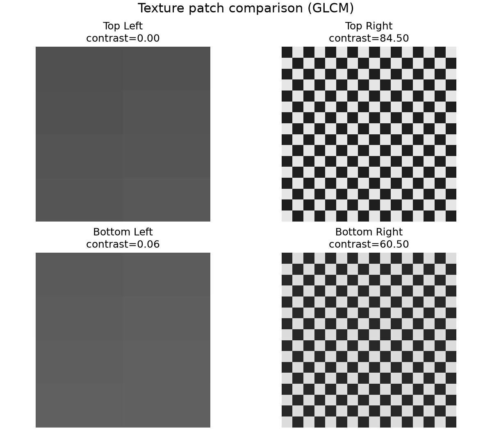

Any decodable image
The included sample has a smooth left half and a coarse checkerboard right half.
Color may match while surface structure differs. This program quantizes grayscale values, builds gray-level co-occurrence matrices, and exports five interpretable texture features.
The included sample has a smooth left half and a coarse checkerboard right half.
Features are reported for the whole image and four quadrants; a PNG compares the patches.
A smooth wall, woven cloth, and gravel may share an average gray value. Their local variations and repeated patterns separate them.
How quickly brightness changes across short distances.
Whether similar transitions repeat in predictable directions.
Horizontal fabric threads can differ from vertical or diagonal measurements.
A patch must be large enough to contain the repeating pattern but small enough not to mix several objects. Program 7 compares quadrants to make that assumption visible.
For a chosen distance and direction, cell (i, j) counts how often gray level i appears beside gray level j.
Convert the image to one brightness channel.
Reduce 256 levels to 16 for a compact matrix.
Use distance 1 at 0°, 45°, 90°, and 135°.
Average each property across the four directions.
High when neighboring levels are far apart.
A linear measure of gray-level difference.
High when mass stays near the GLCM diagonal.
Energy measures concentration; correlation measures the linear dependency of paired levels.
The source validates inputs, writes deterministic filenames, and returns a nonzero status for invalid requests.
python3 -m venv .venv && source .venv/bin/activatepython -m pip install -r requirements.txtpython main.py --input sample_texture.pgm --output-dir outputComplete executable implementation with validation and reusable functions.
A tiny, license-free smooth/coarse fixture stored with the codelab.
error: message and exits with status 2.The bundled fixture provides a simple sanity check: smooth quadrants change by only a few gray levels, while checkerboard neighbors jump sharply.

Download the expected CSV generated with the default arguments.
texture_features.csvOne row each for the whole image and four named quadrants. Values use six decimal places for repeatable comparison.
patch_comparison.pngA 2×2 grayscale figure with each patch’s contrast in its title.
They can feed clustering or classification, but they are not semantic labels by themselves.
Alternating extremes create many high-difference neighbor pairs.
A pattern can repeat strongly in one direction and weakly in another.
--levels from 16 to 8 or 32.--distance 1 with a distance matching the pattern period.